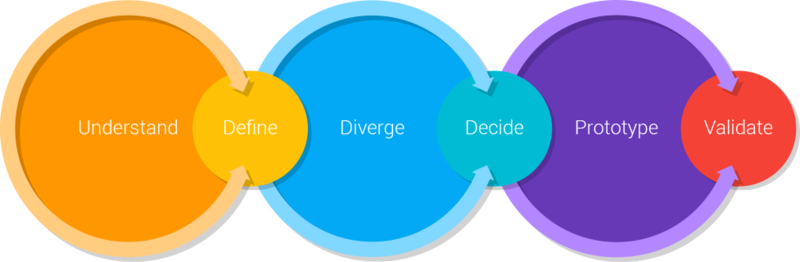

DEFINIÇÃO DE TEMA
Histórico de revisão
| Data | Versão | Descrição | Autor(es) |
|---|---|---|---|
| 18/08/19 | 0.1 | Adiciona Design Sprint | Welison Regis |
| 19/08/19 | 0.2 | Incrementa metologia e referências | Welison Regis |
Introdução
Design Sprint
Definição
Decorrente da necessidade de alinhar o time de trabalho sob uma visão compartilhada de metas e resultados claramente definidos, e a ânsia da redução do tempo de produção de um produto, surgiu-se o conceito de design sprint.
Conceito de Design Sprint
A design sprint, inicialmente proposta pela Google, é um método usado para resolver problemas por meio de idealização, prototipagem e teste de ideias em um curto espaço de tempo.1
Etapas

As etapas de uma Design Sprint podem ser classificadas como abaixo2:
- Fase de entendimento (understand): qual a necessidade do cliente ou da empresa? quais as capacidades tecnológicas?
- Fase de definição (define): qual é a estratégia chave e o foco do produto?
- Fase de divergência (diverge/sketch): como explorar o máximo de ideias distintas?
- Fase de decisão (decide): selecione a melhor ideia até então.
- Fase de prototipação (prototype): Crie artefatos que permitam testar as ideias com os usuários.
- Fase de validação (validate): Teste as ideias com usuários, stakeholders e especialistas técnicos.
Metodologia
Por consenso, o grupo avaliou que seria mais prudente avaliar as três melhores ideias de projetos, disponíveis e votadas em issue no GitHub, e então prosseguir com o desenvolvimento de um tema.
Understanding, define, sketch
Para melhor compreensão e definição dos temas propostos, reservou-se a aplicação da fase understanding, fase define e fase sketch com a elaboração dos seguintes artefatos:
- RichPicture;
- Brainstorm com mapas mentais;
- 5W2H.
Decision
Para a decisão sobre qual é a melhor ideia proposta, o grupo discorreu em uma argumentação tendo como base as causas que acarretam no fracasso do produto. Logo, elaborou-se:
- Diagrama de Ishikawa: o que poderia causar o fracasso do produto?;
- Argumentação.
TODO: Plano de elicitação.
Prototype
Nessa etapa, já com os requisitos da aplicação encaminhados, destina-se a desenvolver:
- Protótipo de média/alta fidelidade.
Outros artefatos interessantes:
- Benchmarking das soluções do mercado;
- Identidade visual.
- Game Storming.
Validate
A validação da aplicação será bsaeada em testes de usabilidade, sendo realizados por três pessoas do ciclo de interesse do contexto da software.
- Teste de usabilidade.
-
DESIGN SPRINT ACADEMY. . In: DESIGN SPRINT ACADEMY. What is a Design Sprint. [S. l.]: Design Sprint Academy, 8 jan. 2019. Disponível em: https://designsprint.academy/design-sprint-3-0/. Acesso em: 19 ago. 2019. ↩
-
DIREKOVA, Nadya. Design Sprint Methods: Playbook for start ups and designers. Mountain View: [s. n.], 2015. Disponível em: https://www.garage2020.nl/wp-content/uploads/2017/01/DesignSprintMethods.pdf. Acesso em: 19 ago. 2019. ↩